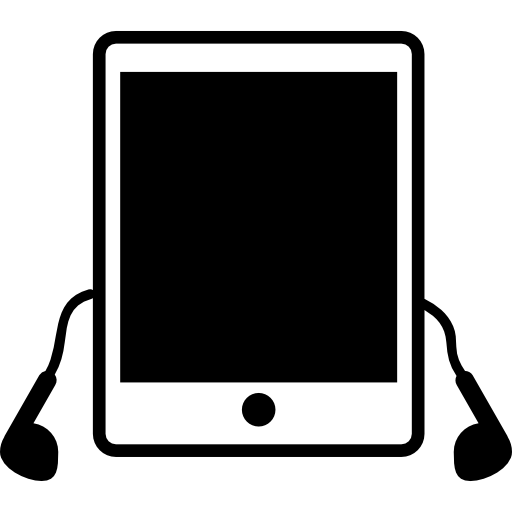
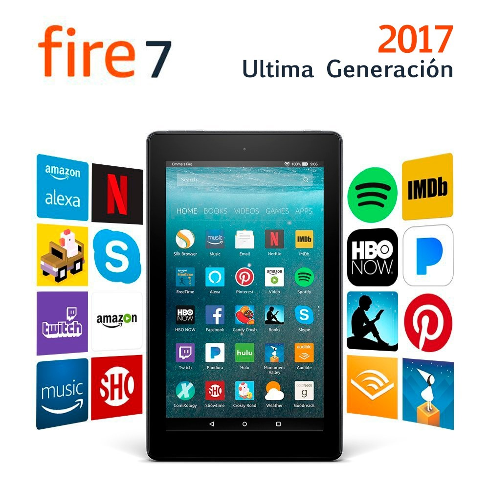

| Informacion |
Imnovacion |
Evolucion |
Compra en linea |
Una tablet, en definitiva, es una computadora (ordenador) portátil más grande que un smartphone pero, generalmente, más pequeña que una netbook.Se caracteriza por contar con pantalla táctil:esto quiere decir que para utilizar la tablet no se necesita mouse (ratón) ni teclado. |
Kindle lector electronico |
Aunque el auge de las tablets se produjo a partir de ese momento las tablets pc existen hace años, en sus orígenes no consiguieron la aceptación por parte del público por sus problemas de peso excesivo, poco usabilidad y sobre todo falta de software especifico para su formato. |
|
|  | Los primeros ejemplos del concepto «tableta de información» se mostraron en la película 2001, odisea del espacio (de 1968),4 y también la serie Star Trek (de los años sesenta). Probablemente basado en estas tabletas de ficción, Alan Kay desarrolló el concepto Dynabook (en 1972), aunque la tecnología de la época no le daba posibilidad de construir un dispositivo funcional. |
Utilidades
|
|
|
Lista de sistemas operativos
|
 | Samsung |